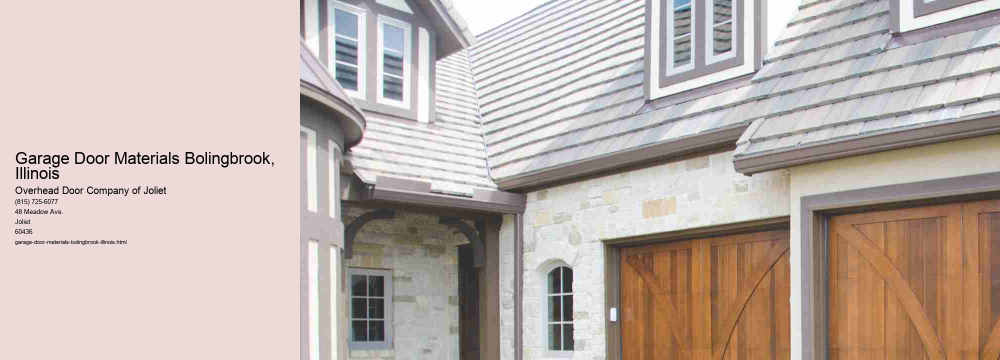

Exploring Garage Door Materials in Bolingbrook, Illinois
As you drive through the charming neighborhoods of Bolingbrook, Illinois, youll notice a variety of architectural styles, each adding its unique touch to the communitys aesthetic. One prominent feature of these homes is the garage door, an essential component that not only enhances curb appeal but also provides security and insulation. When choosing a garage door, the material is a critical factor that determines its durability, cost, and maintenance. In Bolingbrook, homeowners have several options to consider, each with its own set of advantages and drawbacks.
Steel is one of the most popular choices for garage doors in Bolingbrook, and for good reason. Known for its strength and durability, steel can withstand the harsh Midwestern weather, from blistering summer heat to freezing winter temperatures. Steel doors are also relatively low maintenance, requiring only occasional cleaning and touch-ups. They can be insulated to improve energy efficiency, which is particularly beneficial in Illinoiss variable climate. Additionally, modern steel doors come in a variety of styles and colors, allowing homeowners to customize their appearance to match their homes exterior.
Wood garage doors offer a classic and timeless appeal that many homeowners in Bolingbrook find irresistible. The natural beauty of wood can significantly enhance a homes curb appeal, adding warmth and character. Wood doors are available in various species, such as cedar, redwood, and mahogany, each offering different grains and hues.
Aluminum garage doors present a lightweight and rust-resistant option, ideal for those seeking a modern and sleek look. In Bolingbrook, where weather conditions can be unpredictable, aluminums resistance to corrosion is a significant advantage. These doors are also easy to operate and can be fitted with insulation to improve energy efficiency. However, they are less durable than steel and can dent more easily, which may be a concern for families with active children or frequent hailstorms.
For homeowners focused on sustainability, composite or fiberglass garage doors are worth considering. These materials are designed to mimic the appearance of wood while offering greater resistance to wear and tear. Composite doors, made from recycled wood fibers and resins, are environmentally friendly and require less maintenance than natural wood. Fiberglass doors are lightweight and resistant to dents, making them an excellent choice for durability. In Bolingbrook, where environmental consciousness is growing, these options provide a balance between aesthetics and ecological impact.
Vinyl garage doors are another viable option, known for their durability and low maintenance.
In conclusion, selecting the right garage door material for your Bolingbrook home involves weighing various factors, including durability, maintenance, cost, and aesthetic preferences. Each material offers unique benefits, from the strength and versatility of steel to the timeless beauty of wood, the modern appeal of aluminum, the sustainability of composite and fiberglass, and the resilience of vinyl. By considering these options, Bolingbrook homeowners can make an informed decision that enhances their homes curb appeal, provides security, and withstands the diverse Illinois climate. Ultimately, the right garage door can be a seamless integration of functionality and style, reflecting the unique character of each home in this vibrant community.
Types of Garage Doors Aurora, Illinois